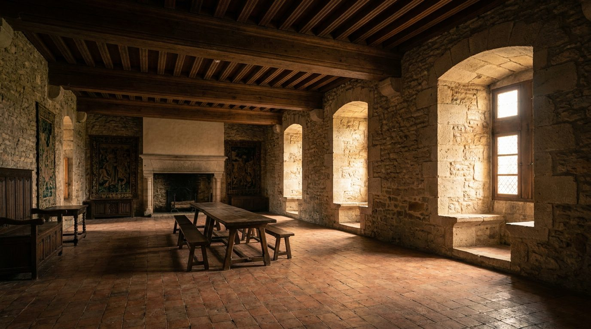

Atlante · IT-07 · Italia · Nord
Rocca medievale con sale affrescate
Esempi · esterno e interno


Architettura · elementi riproducibili
- muri in pietra 80-120 cm, altezza 5-7 m, soffitto a cassettoni lignei o a travi
- finestre piccole e strombate
- pavimento in cotto o pietra
- camino monumentale
- ferri battuti
- La penombra è l'elemento: pochi metri quadri di luce su pareti in ombra.
Luce
fasci radenti da finestre piccole e alte, direzione laterale dura, ambienti in penombra con un solo tratto di parete illuminato.
Prompt di generazione (EN)
Medieval castle hall, 6 m stone walls with 15th-century fresco fragments, coffered timber ceiling, terracotta floor, small deep-set windows throwing one hard shaft of light across the room, deep shadows, iron chandelier, 35 mm, chiaroscuro grade with brick-red and night-blue accents.